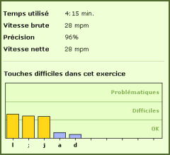

L'analyse est réalisée en fonction des touches mal tapées, des corrections avec la touche Effacer et des délais relatifs à votre vitesse de frappe.
A la fin d'un exercice, l'écran de résultats vous montre les touches difficiles dans cet exercice - de la plus difficile à la plus facile.
Vous trouverez aussi les touches difficiles dans l'écran « Révisions ». Ce graphique vous montre les données accumulées tout au long des exercices du cours.